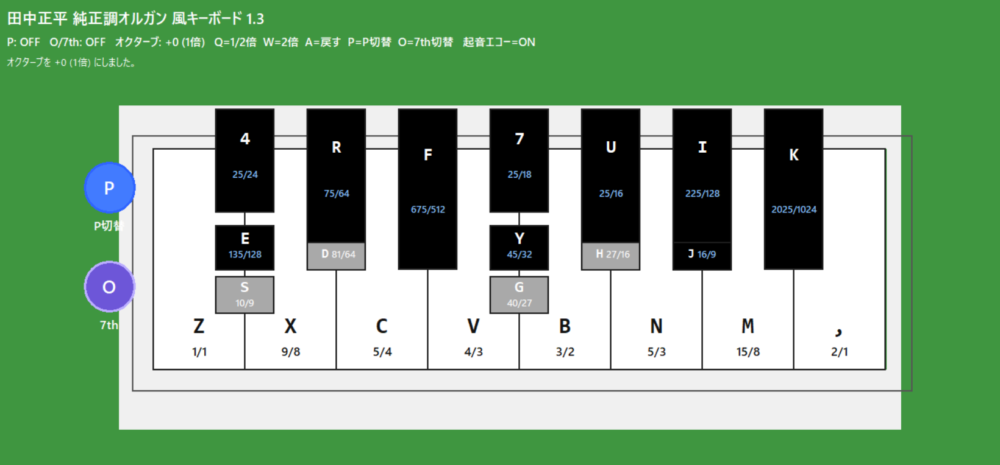
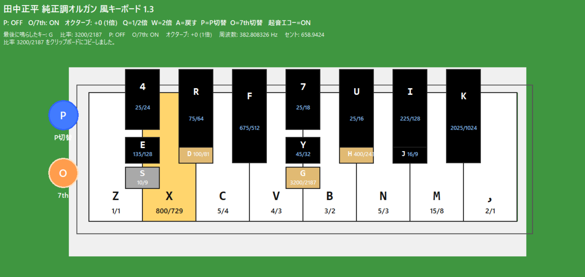

October 14, 2026
Independent Knee-Lever Pitch Switching in a Python Just-Intonation Keyboard v1.3 Referencing Tanaka Shōhei’s Organ
Overview:
This project is version 1.3 of a Python just-intonation keyboard developed by Reiji (age 10),
referencing Dr. Tanaka Shōhei’s just-intonation organ.
The main update is the separation of pitch-ratio switching into two independently controllable systems,
based on the two knee levers of the historical instrument. In v1.2, ordinary alternative intervals and
the alternative intervals used for harmonic-seventh-related notes were switched together using a single P key.
It was therefore not possible to operate the two groups separately.
In v1.3, the newly introduced O key controls the four harmonic-seventh-related alternatives, while the P key
continues to control the other six alternatives. P and O can be switched on or off independently or activated
at the same time. The underlying pitch ratios have not been changed; the update changes how the existing
alternatives can be selected during performance.
The octave-shift functions, reed-organ-like synthesized timbre, and short attack echo introduced in v1.2
remain available. A new performance-trial video demonstrates the v1.3 instrument and its switching mechanism.
Note: The observations and design ideas originate from Reiji and are explained in Japanese. A parent organizes the documentation, and AI assists with English translation and coding. The distinction between Reiji's own observations and the AI assistant's inferences is maintained below.
Reiji's Words and Ideas
-
The main change in v1.3
The biggest change this time is that I separated the harmonic-seventh switching from the P-key switching and assigned it to the O key instead.
In v1.2, I used the P key to switch the ordinary alternative intervals and the harmonic-seventh-related intervals together. But on the actual organ, these are operated by separate knee levers. So in v1.3, I made P and O independent, allowing them to be switched separately. -
Correspondence with the original instrument
The actual instrument has knee levers in the center and on the left for switching intervals. In v1.2, I combined the functions of both levers into a single P-key operation, so I could not use the central and left levers separately or together.
In v1.3, P corresponds to the central knee lever, and O corresponds to the left knee lever. Now I can use either one independently or activate both at the same time. -
Harmonic-seventh-related intervals and consonance
Previously, intervals involving harmonic-seventh-related notes such as Evh7, F#vh7, Avh7, and Bvh7 could sound muddy to me. Here, the symbolvmeans lowering the pitch by one syntonic comma.
By making the harmonic-seventh switching independent through the O key, these intervals now seem to harmonize better. As a result, I can play pieces using these notes with almost none of the muddiness I heard before. -
The pitch ratios themselves have not changed
I have not changed the pitch ratios in this version. I simply moved the ratios used for harmonic-seventh-related switching from P to the independent O key. Rather than adding new pitches, I changed how the existing alternatives can be selected.
Technical Implementation
1. Two independent pitch-switching systems
The six notes controlled by P correspond to the central knee-lever function described for this project.
The four notes controlled by O correspond to the left knee-lever function.
The following ratios are defined in the v1.3 source code.
P switching — central knee lever
| PC key | P OFF | P ON |
|---|---|---|
| 4 | 25/24 | 16/15 |
| R | 75/64 | 6/5 |
| F | 675/512 | 27/20 |
| 7 | 25/18 | 64/45 |
| U | 25/16 | 8/5 |
| I | 225/128 | 9/5 |
O / 7th switching — left knee lever
| PC key | O OFF | O ON |
|---|---|---|
| X | 9/8 | 800/729 |
| D | 81/64 | 100/81 |
| G | 40/27 | 3200/2187 |
| H | 27/16 | 400/243 |
All ten alternative ratios already existed in v1.2. This version does not change their numerical values.
It changes which switching system controls each ratio.
There are four possible operating states: P OFF / O OFF (both groups at their default ratios),
P ON / O OFF (six P-group alternatives), P OFF / O ON (four O-group alternatives),
and P ON / O ON (both groups of alternatives at once).
The code checks the O override first. However, because the P and O groups contain different keys,
they do not conflict in normal operation.
2. State management and frequency calculation
The O key is defined as SEPTIMAL_TOGGLE_KEY = "O".
The ratios for X, D, G, and H are stored in SEPTIMAL_OVERRIDES, while the
septimal_mode state tracks whether O switching is enabled.
The selected state affects the ratio lookup, frequency and cent calculations, visual ratio labels,
and the playback cache. The key labels are refreshed through refresh_ratio_labels()
whenever P or O is toggled.
3. Reusing generated audio at identical frequencies
v1.2 prepared sounds for combinations of P state and octave position.
v1.3 needs combinations of P state, O state, and octave position.
Different combinations can nevertheless produce identical frequencies.
To avoid generating the same sound repeatedly, v1.3 introduces
sound_by_freq and attack_echo_by_freq.
Once the sustained tone and attack echo for a frequency have been generated,
other switching states that use the same frequency can reuse them.
4. Interface and controls
A new O / 7th button appears to the left of the keyboard, below the existing P button.
It is purple when OFF and orange when ON. Either the physical O key or a mouse click
on the button toggles this state. The visible pitch-ratio labels update when the state changes.
5. Features retained from v1.2
The reference frequency (1/1 = 261.625565 Hz), reed-organ-like harmonic synthesis,
short attack echo, and arrangement of white, black, and gray keys remain unchanged.
Q and W still shift the entire keyboard down or up by one octave, A restores the original octave,
and the supported shift range remains −2 to +2 octaves. Notes played from the PC keyboard
are sustained while the keys are held, while clicking a note with the mouse sounds it for about
0.45 seconds. The display continues to show the last-played note's ratio, frequency, and cent value,
and copies its ratio to the clipboard.
Images

Python Just-Intonation Keyboard v1.3 — Default State
The complete v1.3 interface with two separate switching buttons on the left. Both P and O are OFF, so the default pitch ratios are displayed. The purple O / 7th button indicates that the harmonic-seventh-related alternatives are disabled.

O / 7th Switching Enabled
The O button has turned orange. X, D, G, and H now show the alternative ratios 800/729, 100/81, 3200/2187, and 400/243, respectively. P remains OFF, demonstrating that these four notes can be switched independently of the six notes assigned to P.
How to Run the Program
This application is written in Python using tkinter and pygame.
Save tanakaOrgan_v1_3.py to a folder. The following example assumes that the file
is saved in the Downloads folder. Open PowerShell or a terminal and run:
cd Downloads
python -m pip install pygame
python tanakaOrgan_v1_3.pyTo build a Windows executable with PyInstaller, install the tool and run:
python -m pip install pyinstaller
python -m PyInstaller --onefile --windowed tanakaOrgan_v1_3.py
These commands assume Python is available from the command line.
Replace Downloads with the actual folder path if needed.
The executable will be generated in the dist folder.
| Source Code | Download tanakaOrgan_v1_3.py |
|---|---|
| Performance Trial Video | Python Just-Intonation Keyboard v1.3 — Performance Trial |
| Application Used | Python / tkinter / pygame / AI-assisted coding |
| Tuning Settings |
Reference frequency: 1/1 = 261.625565 Hz Pitch ratios are represented by rational numbers in a just-intonation framework. P and O independently select the existing groups of alternative pitch ratios. |
| Version 1.3 Updates |
Separate P and O switching corresponding to two knee-lever functions. Independent or simultaneous selection of the two groups of alternative intervals. O / 7th on-screen button and live ratio-label updates. Frequency-based reuse of generated sound and attack-echo data. |
| Retained Functions |
Reed-organ-like synthesized timbre and attack echo. Octave shifting from −2 to +2 through Q, W, and A. The same keyboard layout, default ratios, and alternative ratios as v1.2. |
| Update Date | October 14, 2026 — Reiji, age 10 |
| Previous Version | Python Just-Intonation Keyboard v1.2 — August 31, 2026 |
| Reference |
Tanaka Shōhei’s Just-Intonation Organ Historical organ held in the collection of the Musical Instrument Museum, Kunitachi College of Music. Kunitachi College of Music, Musical Instrument Museum, Musical Instrument Collection Management Materials 2: Activity Report, 2018 Edition (English rendering of the Japanese publication title), pp. 5–28. |
AI Assistant’s Notes and Inferences
The defining feature of v1.3 is not the introduction of new pitch ratios, but a redesign of the control structure to reflect the independently operated knee levers of the historical instrument. The following observations distinguish implemented behavior from possible musical interpretations.
- From ratio mapping to control-mechanism modeling. The ten alternative ratios were already present in v1.2, but one switch controlled all of them. Separating the switching groups makes it possible to reproduce more combinations of settings. This extends the project from mapping pitches numerically toward modeling how they are selected in performance.
- A possible explanation for the improved consonance. Reiji reports that certain harmonic-seventh-related passages sound less muddy after the update. Since the ratios themselves are unchanged, one plausible explanation is that O can now select its four alternative notes without simultaneously changing the six P-group notes. The benefit may therefore come from choosing more suitable combinations of pitches, rather than from improving the accuracy of individual ratios. No quantitative beating or spectrum measurements are supplied here.
- Distinguishing the label “harmonic seventh” from a strict 7-limit ratio. Although the O switch is described in this project as a harmonic-seventh-related function, the four programmed ratios—800/729, 100/81, 3200/2187, and 400/243—contain only the prime factors 2, 3, and 5. They are therefore 5-limit ratios, not exact 7-limit intervals such as 7/4. They should also be distinguished from the seventh harmonic component used in v1.2's timbre synthesis.
- State management and audio reuse. Adding a second switch multiplies the number of control-state combinations. The frequency-keyed caches allow states that result in the same pitch to share their generated audio. This avoids redundant sound generation while preserving the independent P/O controls.
- Position in the project's development. Earlier versions focused on pitch-ratio playback, sound design, and extending the playable octave range. Version 1.3 preserves those functions while bringing the switching interface closer to the described operation of Tanaka Shōhei’s organ. Reiji's decision to address an audible performance problem through control restructuring, rather than by changing the numerical ratios, is a notable feature of this iteration.